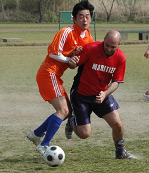

|
Misato, Sunday 5th April
Maritizio FC showed their mettle by digging deep against a capable Dutch Embassy side to record a controversial but memorable victory on the Misato marshland that continues an impressive record of three wins in the last three games for 'Tizio.
There was little between the teams in the opening 20mins with both playing a cagey midfield game, but if anything, the Dutch made the better start with numerous assaults on a Maritizio defence that looked to be struggling to rouse themselves from Sunday morning snoozes in the face of such lively opposition.
However, once awakened from their slumber, stout defending combined with several wasted opportunities by the Dutch strikers, Maritizio started to build momentum and ask questions of the Orangemen with a few well timed attacks of their own, breaking up movement in midfield and using the speed of winger Jesper Lagerback and striker Larry Lopez to open up the Dutch back four with increasing regularity.
Even curious refereeing fixations with foul throws did nothing to halt the Red's progress and the pressure finally told when another ball fired in across goal from the right was controlled well by fresh substitute Armando Ponciano and rolled past the on-rushing defender and keeper for the easiest of tap-ins by Lopez, giving Maritizio a deserved lead going into the second half.
Unfortunately, such a lead was short lived as from the restart marauding orange shirts quickly pegged back a surprised Maritizio defence, forcing two early goals in the space of 5 minutes to take the lead - both from set pieces - with So Takada rising unchallenged from a free kick to volly home acrobatically from 6 yards, and another orange player slipping his marker to head home from a corner moments later.
If the reds were disappointed to let their hard fought lead slip so quickly, they were despondent moments later when the impassioned Will Kol reacted to an unpunished knee-high challenge and was harshly shown an instant red card, leaving his bemused team mates with a seemingly insurmountable task.
If Kol had intended his dismissal to galvanize his team, it had the desired effect as within a matter of minutes they had drawn level after Christian Thomas was brought down on the edge of the Dutch area. The resulting free kick was powerfully driven to the far post and an Alexandre Klein bullet-header left the keeper no chance.
Hoping to capitalise on Dutch shock and disappointment, the Red's continued to push for the winner and were rewarded minutes later after some clever skills through the Dutch defence by Lagerback, squaring the ball to the waiting Thomas to side foot home from 12 yards to decide the match.
If the Dutch felt hard done by, they may have had just cause as even more remarkable refereeing decisions blighted the remainder of the game with goalscorer Takada given his marching orders for dissent and the match coming to an abrupt end prematurely due to conflicting start times of the following game - cue much debate and accusation, with a compromise of playing an extra 10 mins being reached.
Ultimately, showing admirable grit and determination, 10-man Maritizio held on for a much deserved win and increasing their unbeaten run to three games. If they can muster such steely resolve for the remainder of the season, not only is Div 2 safety assured, but the possibility of reaching the heady heights of mid-table respectability is not out of the question. Roll on next game!
Report by Christian Thomas
|